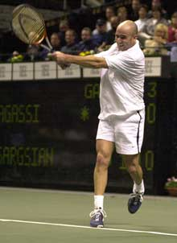
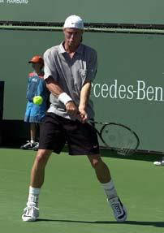
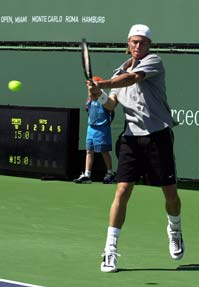
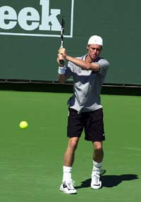
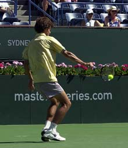
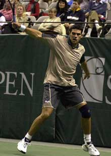

The Myth of the Wrist – The Backhand
Comprehensive unified tennis knowledge base — Fundamentals, Stroke Analysis, Reference Library, and more
The Myth of the Wrist – The Backhand
John Yandell
How entrenched is the myth of the wrist? Recently I was speaking at a twilight tennis dinner at a Northern California tennis club. I showed the members some of the Advanced Tennis Research high speed footage of Andre Agassi's forehand, demonstrating how his wrist remained laid back until long after the ball had gone from the strings (Myth of the Wrist: Forehand).
When does the wrist release or wrapping motion occur on the two-hander and what role does it really play in the stroke?
The footage really opened their eyes, and the talk was a big success. Sitting at the bar afterwards, however, I was approached by one of the club's most avid players, a guy in his 40's who had been playing for about four years. He told me that I "might" have convinced him on the forehand, but he was still certain the wrists played a critical role in his two-handed backhand.
My new friend was far from alone, of course, in his view of role of the wrists on the two-handed backhand. There are even some coaches who argue that wrist action is important in hitting with one hand.
For example, a well-known tennis writer who also teaches tennis has been adamant for years that to hit topspin with the one-hander the player must "roll the racquet head over the ball" with a violent upward movement of the wrist and elbow just before contact. Strangely he has never connected this theory to his own (chronic) case of tennis elbow.
Rios demonstrates the core hitting arm position on the two-hander with the elbow in and the wrist laid back.
The major problem in understanding the correct wrist position on either backhand--as with the forehand--is the extremely brief time interval in which the racquet is moving through the contact zone. In a literal sense we are all "hitting blind," and also, watching blind. This is because the contact between the ball and the racquet occurs too fast for the human eye or conventional video cameras to register clearly.
Advanced Tennis high speed video of top players, shot at 250 frames a second, demonstrates that in reality the role of the wrist is passive for both the one-handed and two-handed backhands. This is completely analogous to the role of the wrist on the forehand.
As you can see for yourself looking at the video here and in the first article on the forehand, the movement of the wrist occurs many frames after the hit. This is light years after the critical instant of the contact in the high speed world of professional tennis.

Note how Agassi's wrist on the dominant, left arm remains laid back well after the hit - his racquet extends out along the path of the shot.
It appears that the wrist and/or arm movement after the hit is a reaction to the force of the hit, or part of the recovery motion to relax and prepare for the next ball. Each stroke has a characteristic wrist position that is established at the start of, or just after the start of the foreswing, a position that is maintained well out into the followthrough.
The Two-Hander
Most coaches who truly understand the bio-mechanics of the two-hander agree that the stroke is extremely similar to the classical forehand. A good two-handed backhand is like a classical forehand, but hit with the opposite hand (See Robert Lansdorp's article on the two-hander). Like a forehand, this means the hitting arm is set up in the power position as the racquet moves forward to the ball. This hitting arm position has two elements: the elbow is bent and tucked in toward the waist, and the palm of the hand is laid back. This is what I call the double bend or power palm position.
Some players, such as Marcelo Rios keep it very simple and maintain this precise hitting arm position, moving straight forward and through the ball. This approach is by far the simplest model for club players, or in fact, players at any level to copy.
Other pro two-handers, including Andre Agassi and Llleyton Hewitt, will often turn the wrist and racquet head downward at an angle of about 45 degrees as they start of the foreswing. Depending on the ball, they may also extend their arms somewhat as they move through the hit, straightening their elbows. However, the wrist will remain laid back, and the double bend position is usually reestablished as they move through the followthrough.
In fact two-handed players will often extend the laid back wrist position further out into the followthrough than on the forehand. This is because the grip with the dominant left hand tends to be less extreme than on the forehand side.
Agassi's grip with his left hand, for example, is a classical eastern, compared to his right-handed forehand grip which is semi-western. Even a player like Hingis, who probably has the most extreme two-handed grip of the current top pros, uses a mild semi-western with her dominant left hand, roughly the same as her forehand side. Compare this to the forehands of so many pros, who are farther underneath the handle with their grips on the forehand side.



Note how Lleyton Hewitt's wrist is laid back before contact (1), after the contact (2), and at the end of the followthrough and the start of the "wrapping" motion backwards away from the hit (3).
The confusion regarding the role wrist on the forehand is usually related to these more extreme grips and the correspondingly extreme internal arm rotation, where the racquet head and arm turn over after the hit with the wrist breaking forward.

Agassi demonstrates the technical end of the swing path, prior to the start of the wrap. His wrists are at about eye level, and there has been at most a minimal, passive release in the position of the wrists.
On the two-handed backhand, however, the confusion regarding the wrist usually stems from the so-called "wrap" followthrough, in which the hands and wrists actually move upward and backward at the end of the followthrough, finishing over the shoulder and often, wrapped around the neck. Many players and coaches--including my friend from the twilight tennis dinner--believe this action of bringing the racquet and wrists sharply upward is the key to pace and topspin.
In reality, this motion occurs long after the hit, when the ball has been off the strings for many milliseconds. Equally important, the racquet, hitting arm and wrists have already extended well outward through the line of the shot and upward in front of the body, prior to the beginning of this motion.v
As the high speed video shows, the hands and butt of the racquet reach about eye level before the arms and wrists release and start backwards in the so-called "wrap" finish. This extension through the hit and upward to eye level represents the technical end of the swing pattern.
As with the release of the wrist on the forehand, the "wrapping" action on the backhand is a consequence rather than a cause of a great forward swing. The wrap is a reaction to action of the foreswing and the hit. It is part of the relaxation and recovery response, rather than a part of the technical forward swing pattern.
But too many players confuse reaction with action in trying to develop this stroke. Players who try to physically emulate the wrap invariably are much too short through the hitting zone. They try to mechanically bring the racquet up and force the "wrap" rather than letting it happen naturally. They may learn to hit with topspin, but often they produce far too much topspin relative to the speed of their ball. Although their backhands may have heavy spin, they tend to land short and lack pace.
This proved to be exactly the case when I filmed our avid friend from the twilight dinner. As I expected, he had a violent, upward followthrough and an exaggerated mechanical wrap finish. Although some of his balls had heavy topspin, few landed deeper than the service line.
When we compared his backhand to the high speed video of Rios and Agassi, he was able to see that his swing plane was far too steep, his wrists released too early, and too much of his energy was going into spin. By modeling his finish and hitting arm positions on these two pro players, he was able to generate significantly more pace and depth, and to do so almost instantaneously.
The One-Hander
The key to understanding the wrist and arm release at the end of the swing is the sequence of the motion.
Although it is less common on the one-handed backhand, the belief still exists that the wrist plays a key role in driving the ball with topspin. In general this can be traced, as on the other strokes, to misperceptions regarding the sequence of motions by top pros. My friend the tennis writer believes the wrist and elbow must move upward independently to generate spin. But in reality high speed video shows this element in the motion occurs after the hit, if at all, and happens far too late to have an impact on the actual shot.
Certain players tend to exaggerate elements in this relaxation and recovery phase more than others. In the case of two top one-handers such as Mark Philippoussis and Tommy Haas, there is often significant motion in the wrist and/or the elbow after the end of the technical swing.
Again, however, these distinctive recovery movements occur many milliseconds after the hit. They are, unfortunately, easier to see than the actual hitting arm at contact and at the critical moments just before and after the hit. As our video shows both players share a common hitting arm position before during and after the hit.
Haas's hitting arm is straight before, during, and well after contact.
Like the forehand and the two-hander, this correct hitting arm position is critical on the one-handed backhand. For the one-hander, this position is with the hitting arm completely straight and the wrist locked. As the arm and racquet go through the hitting zone, there is no motion at either the elbow or the wrist.
Every top pro player establishes this straight hitting arm position well before contact. In the case of Philippoussis, who has one of the most beautiful one-handers in recent history, this straight arm position is established at about the time the racquet head starts to move forward to the ball. At this point, his racquet hand is still very far back, roughly even with the middle of his left rear leg.

Gustavo Kuerten demonstrates perfect hitting arm position on his one-handed topspin backhand. The arm is straight and locked at the elbow and wrist.
Even a player such as Gustavo Kuerten who has the highest backswing in the pro game with a severe bend in the elbow, straightens out his arm well before the hit. In fact Kuerten, like Philippoussis, gets to this position very early despite the size of his windup.
Like the other groundstrokes the hitting arm position on the one-hander remains unchanged through the hit and well out into the followthrough. There is no significant internal arm motion. The straight arm position can continue until, like the two-hander, the racquet hand and wrist reaches eye level or even higher.

Philippoussis demonstrates the straight arm hitting position at the end of the foreswing. The wrist is about eye level. The wrist and arm release come after he passes through this position.
Club players should try to model these basic hitting arm positions in developing the core elements in either backhand. If the core bio-mechanics are right, and the swing pattern is fast enough and relaxed enough, the distinctive relaxation or wrapping movements will tend to occur naturally and automatically.
High speed video has given us a look inside this previously invisible world of professional stroke production. No matter what commentators and magazine writers may say to perpetuate the myth of the wrist, any player who looks at the video here can see the truth for himself.
At the same time, this unique Advanced Tennis video (Click Here) is a powerful tool for players to develop the right technical elements for themselves. As Advanced Tennis research progresses, we hope to reach more and more players and coaches. In the meantime, this cutting edge knowledge is something that you may be able to turn to your advantage against unsuspecting, less well-informed opponents.

John Yandell is widely acknowledged as one of the leading videographers and students of the modern game of professional tennis. His high speed filming for Advanced Tennis and Tennisplayer have provided new visual resources that have changed the way the game is studied and understood by both players and coaches. He has done personal video analysis for hundreds of high level competitive players, including Justine Henin-Hardenne, Taylor Dent and John McEnroe, among others.
In addition to his role as Editor of Tennisplayer he is the author of the critically acclaimed book Visual Tennis. The John Yandell Tennis School is located in San Francisco, California.
Source: tennisplayer.net archive — Myth of the Wrist The Backhand.docx (John Yandell teaching library, 2002-2022). Extracted and rendered as HTML for Tennis Future Lab.